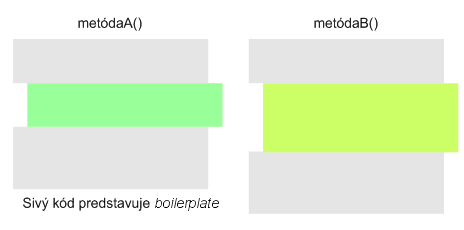
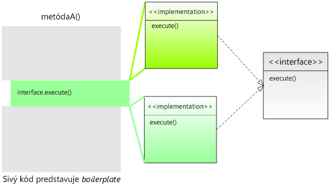

Súbory v Jave sú zložité!
Ak ste niekedy programovali v Pascale, iste ste si pamätali veľmi
jednoduchý spôsob, ako načítavať riadky z textového súboru. Jedným
volaním procedúry ste asociovali premennú so súborom, druhým ho otvorili
na čítanie a vo while-cykle načítavali dáta pomocou starej známej
funkcie readln(). Hja, procedurálne programovanie malo niekedy svoje
výhody. V Jave je práca so súbormi o niečo komplikovanejšia – veď len
triviálny príklad vyzerá nasledovne:
package sk.test;
import java.io.File;
import java.io.FileNotFoundException;
import java.util.Scanner;
public class Subory {
public static void main(String[] args) throws FileNotFoundException {
File file = new File("data.txt");
Scanner scanner = new Scanner(file);
while(scanner.hasNextLine()) {
String line = scanner.nextLine();
System.out.println(line);
}
scanner.close();
}
}V tomto príklade sme dokonca ani neriešili výnimky, čo je
poľutovaniahodné – správny program by vyžadoval jeden try-catch-blok,
kde vo finally sekcii uzavrieme inštanciu Scannera. Aká to „hrôza“
oproti Pascalu, nehovoriac o skriptovacích jazykoch typu Groovy, kde
ekvivalentný kód vyzerá nasledovne:
def f = new File("data.txt")
f.eachLine{
println it
}
Ak by sme v príklade chceli namiesto všetkých riadkov vypísať len tie,
ktoré začínajú veľkým písmenom, Java kód by vyzeral takmer identicky:
rozdiel by spočíval v odlišnom kóde vo vnútri while-cyklu. Ak
vyextrahujeme kód z metódy main() do metódy novozaloženej triedy
FileUtils, situácia bude nasledovná:
package sk.test;
import java.io.File;
import java.io.FileNotFoundException;
import java.util.Scanner;
public class FileUtils {
public void printAllLines(File file) throws FileNotFoundException {
Scanner scanner = null;
try {
scanner = new Scanner(file);
while(scanner.hasNextLine()) {
String line = scanner.nextLine();
System.out.println(line);
}
scanner.close();
} finally {
if(scanner != null) {
scanner.close();
}
}
}
}Metóda na výpis riadkov začínajúcich veľkým písmenom
printAllLinesStartingWithUpperCase() bude úplne identická, vo vnútri
však pribudne jeden if.
Čo je na tom najhoršie? Z trinástich riadkov metódy je dôležitý len jeden (resp. dva, či tri) riadok, a ostatné predstavujú obslužný kód, slangovo nazývaný boilerplate code. Nedôležité veci sa dookola kopírujú a tie dôležité sa strácajú v záplave nepodstatností.
Existuje však možnosť, ako si túto úlohu uľahčiť: a spočíva v použití interfejsov.
Boilerplate je pôvodne pomenovanie pevného oceľového plechu, z ktorého sa vyrábali kotly (koniec-koncov, pojem bojler je známy aj u nás). Tento plech mal však aj inú funkciu – razili sa doň texty, ktoré sa dali používať pri mnohých príležitostiach, napr. univerzálne upozornenia, či oznamy. Namiesto komplikovanej sadzby stačilo odtlačiť text vyrazený na plechu a bolo. Súčasnou analógiou boilerplate textov sú niekoľkovetné popisky opisujúce firmu spätú s konkrétnym produktom alebo stručné charakteristiky autora umiestňované pod články. Boilerplate kód má teda vlastnosti opakovateľnosti, pravidelného používania pri tých istých situáciách. Píše sa len raz a pri ostatných použitiach sa doslova kopíruje.

Interfejsy ako cesta k zmenšeniu boilerplate kódu
Začiatočníci považujú interfejsy za ťažko uchopiteľné (zrejme je príčinou zložité vysvetlenie), a dokonca málo používané. V Jave však bez nich ďaleko nezájdeme – nehovoriac o tom, že i vo všeobecnom objektovo orientovanom programovaní na nich stojí nejeden návrhový vzor.
Návrhom interfejsu predovšetkým určíme sadu chovania, teda čo (akú funkcionalitu) od neho klient bude očakávať. To, ako sa interfejs bude v danej situácii správať, je ponechané na triedy, ktoré budú tento interfejs implementovať. Vezmime si náš príklad, presnejšie algoritmus, ktorý v ňom používame. Ten sa dá slovne popísať nasledovne:
- otvor súbor
- postupne prechádzaj všetky riadky
- s každým riadkom niečo urob
- uprac po sebe
Rozdiel medzi našimi dvoma metódami (vypíš všetky riadky, vs. vypíš riadky začínajúce veľkými písmenami) spočíva v odlišnom správaní v kroku 3. V našom obrázku sú prvé dva kroky opticky v hornej sivej ploche, krok 3. je zelená plocha a štvrtý krok je obsiahnutý v spodnom sivom obdĺžniku. Všimnime si, že v treťom kroku máme len všeobecné tvrdenie „s každým riadkom niečo urob“. To sa podobá na očakávania, ktoré by sme vedeli špecifikovať v interfejsi. Ako konkrétne sa s daným riadkom vysporiadame, záleží od triedy, ktorá bude náš interfejs implementovať. Prepíšme si to do kódu, tentokrát do metódy handleLines(File):
public class FileUtils {
public void handleLines(File file) throws FileNotFoundException {
Scanner scanner = null;
try {
scanner = new Scanner(file);
while(scanner.hasNextLine()) {
String line = scanner.nextLine();
// urob niečo s riadkom
}
scanner.close();
} finally {
if(scanner != null) {
scanner.close();
}
}
}
}Vágny popis „urob niečo s riadkom“ vieme nahradiť volaním nejakej
fiktívnej metódy inštancie lineHandler zatiaľ nenavrhnutej triedy
LineHandler. Táto metóda si vystačí s jediným parametrom typu
String, v ktorom príde aktuálne spracovávaný riadok.
Máme teda potenciálneho kandidáta na triedu, pri ktorom vieme, čo od neho chceme. Naše želanie je „chcem triedu, ktorá mi spracuje riadok”. To bohate stačí na to, aby sme vedeli vytvoriť interfejs LineHandler, ktorý naše želanie špecifikuje v programovacom jazyku:
public interface LineHandler {
public void String handle(String line);
}Naozaj tam nie je nič zložité – máme predpis pre triedu, ktorá spracuje
riadok. Nevieme síce ako sa to spraví, ale v rámci triedy FileUtils,
ktorá obsahuje metódy pre prácu so súbormi, to nie je dôležité. V metóde
handleLines() triedy FileUtils len povieme, čo chceme a ako
sa to spraví, záleží od implementácie interfejsu. V kóde tento interfejs
použijeme nasledovne:
while(scanner.hasNextLine()) {
String line = scanner.nextLine();
// urob niečo s riadkom
lineHandler.handle(line);
}
V kóde je ešte jedna nejasnosť: odkiaľ sa zjavila premenná
lineHandler? Prirodzené miesto, kde ju môžeme uviesť, je parameter
metódy handleLines() v triede FileUtils.
public class FileUtils {
public void handleLines(File file, LineHandler lineHandler)
throws FileNotFoundException
{
...
}
}Dva parametre sú v tomto prípade úplne prirodzené: prvý hovorí, ktorý súbor sa má spracovať, a druhý vraví, čo sa má stať s každým riadkom.
Výpis riadkov cez interfejs
Dosiaľ sme stále vraveli, čo chceme s každým riadkom spraviť, ale
nikde sme neuviedli ako sa s riadkami vysporiadame. Teraz je na to
správna chvíľa. Konkrétny spôsob bude záležať od implementácií, teda od
konkrétnych tried, ktoré budú implementovať interfejs LineHandler.
Dajme si triviálny príklad, ktorý spraví presne to, čo kód na úplnom začiatku článku, čiže vypíše riadky na konzolu.
public class SysoutLineHandler implements LineHandler {
public void handleLine(String line) {
System.out.println(line);
}
}Máme triedu, ktorá implementuje interfejs (implements
LineHandler) a v metóde handleLine() jasne uvádza, čo sa s
riadkom stane: vypíše sa na konzolu. Trieda SysoutLineHandler teda
hovorí, ako sa s riadkom vysporiadame.
Použitie v kóde je zjavné: stačí si vytvoriť testovaciu triedu s metódou main() a v nej zavolať:
public static void main(String... args) {
FileUtils fileUtils = new FileUtils();
LineHandler lineHandler = new SysoutLineHandler();
File file = new File("data.txt");
fileUtils.handleLines(file, lineHandler);
}Inštancii triedy FileUtils sme podhodili dva parametre: jednak súbor
file a jednak inštanciu triedy SysoutHandler, ktorá implementuje
interfejs LineHandler. Priradenie na druhom riadku je správne, keďže
implementácia interfejsu nie je nič iné než dedičnosť, a teda pokojne
môžeme priradiť „potomka” typu SysoutHandler do predka typu
LineHandler.
Dva parametre hovoria na akých dátach budeme pracovať (teda na dátach zo súboru) a čo s nimi budeme robiť (vypisovať ich do súboru).
Výpis riadkov začínajúcich veľkými písmenami
Výpis riadkov, ktoré začínajú veľkými písmenami, je už hračka. Stačí
vytvoriť samostatnú triedu UpperCaseStartingLineHandler, ktorá
implementuje interfejs LineHandler, vytvoriť jej inštanciu, ktorú
použijeme ako argument v metóde FileUtils#handleLines():
public class UpperCaseStartingLineHandler implements LineHandler {
public void handleLine(String line) {
if(line.length() > 1
&& Character.isUpperCase(line.charAt(0)))
{
System.out.println(line);
}
}
}Prepojenie inštancií je analogické ako v predošlej stati, rozdiel
spočíva vo vytvorení inej inštancie LineHandlera.
public static void main(String... args) {
FileUtils fileUtils = new FileUtils();
LineHandler lineHandler = new UpperCaseStartingLineHandler();
File file = new File("data.txt");
fileUtils.handleLines(file, lineHandler);
}Počítanie riadkov v súbore
Na základe dvoch predlôh vieme vytvoriť aj tretí vzorový príklad, ktorý zistí počet riadkov v súbore.
public class LineCountingHandler implements LineHandler {
private int lines;
public void handleLine(String line) {
lines++;
}
public int getLines() {
return lines;
}
}V tomto prípade sme dodali navyše jeden getter, ktorým získame počet riadkov v súbore. Použitie je v tomto prípade opäť analogické:
public static void main(String... args) {
FileUtils fileUtils = new FileUtils();
LineCountingHandler lineHandler = new LineCountingHandler();
File file = new File("data.txt");
fileUtils.handleLines(file, lineHandler);
System.out.println(lineHandler.getLines());
}Rozdiel spočíva v tom, že pri vytváraní inštancie lineHandlera už
nemôžeme na ľavej strane použiť interfejs, pretože by sme nemali prístup
k metóde getLines() (nezabúdajme, že inštancia interfejsového typu má
len tie metódy, ktoré sú uvedené v interfejse).
Vystrihovanie a lepenie kódu
Odsun kódu do interfejsu si vieme predstaviť ako vystrihnutie kódu nožničkami.

Pôvodný kód v tmavozelenom obdĺžniku v metóde A vieme „vystrihnúť“ a samotný vystrižok považovať za implementáciu interfejsu.
Do prázdnej medzery potom vieme vlepovať buď jednu alebo druhú implementáciu. „Vlepovaním” rôznych implementácii vieme dosahovať rozličnú funkcionalitu.
Kde inde sa to používa
Tento trik s kódom v interfejsi je často používaný i v základnom API
Javy. Bežným príkladom je výpis súborov a adresárov, ktoré sa nachádzajú
v adresári, ktorý je možné dosiahnuť pomocou metódy
java.io.File\#listFiles(). Chcete všetky súbory končiace sa na .mp3?
File file = new File("C:/Windows");
for(File child : file.listFiles()) {
if(child.getPath().endsWith(".mp3")) {
System.out.println(child);
}
}Toto však možno získať aj alternatívnym spôsobom, ktorý je založený na vyššieuvedenej filozofii interfejsu.
Metóda listFiles() má aj preťaženú verziu s parametrom typu FileFilter,
ktorý nie je ničím iným než interfejsom s jedinou metódou. Tá pre každý
jednotlivý súbor či podadresár vráti true v prípade, že sa má zahrnúť do
výsledného poľa súborov. Vieme si teda nadefinovať viacero filtrov,
ktoré potom dynamicky používame podľa toho, ako chceme vyfiltrovať
súbory či podadresáre daného adresára.
Ten istý príklad vieme napísať aj takto:
public class Mp3Filter implements java.io.FileFilter {
public boolean accept(File pathname) {
return pathname.getPath().endsWith(".mp3");
}
}
// ...
File file = new File("C:/Windows");
FileFilter mp3Filter = new Mp3Filter();
File[] mp3Files = file.listFiles(mp3Filter);Vo výslednom poli mp3Files budeme mať len tie súbory, ktoré spĺňajú
podmienku v metóde Mp3Filter#accept().
Filozofia interfejsov z funkcionálneho programovania
Príklady o súboroch možno zovšeobecniť pre ľubovoľnú situáciu. Z
matematického hľadiska ide totiž o situáciu, keď máme dáta (v podobe
kolekcie), ktoré vyfiltrujeme pomocou predikátu (funkcie, ktorá vráti
true/false). Interfejs FileFilter zodpovedá predikátu, ktorý pre každý
súbor vráti true, ak ho treba ponechať vo výslednej kolekcii.
Z matematického hľadiska ide o zápis , kde Vstup je vstupná množina a
Výsledok výsledná filtrovaná množina. (V zápise pre ignorujeme
rozličné druhy kolekcie.)
Pomocou interfejsu by sme to zapísali nasledovne:
public interface Predicate<T> {
public boolean evaluate(T variable);
}Filtrujúca metóda, ktorá odstráni z kolekcie tie prvky, ktoré nespĺňajú pravdivostnú funkciu, by potom vyzerala nasledovne:
public <T> Collection<T> filter(Collection<T> collection, Predicate<T> predicate) {
Iterator<T> iterator = collection.iterator();
while(iterator.hasNext()) {
T element = iterator.next();
// ak prvok nespĺňa pravdivostnú funkciu, vyhodíme ho
if(!predicate.evaluate(element)) {
iterator.remove();
}
}
return collection;
}Všimnime si, že metóda berie dve hodnoty: dáta (collection) a funkciu,
ktorá sa má aplikovať na každý element v dátach.
Ukážme si to na príklade – z danej množiny vráťme len párne čísla. Najprv si definujme triedu pre pravdivostnú podmienku „číslo je párne”:
public class EvenNumberPredicate implements Predicate<Integer>() {
public boolean evaluate(Integer variable) {
return variable % 2 == 0;
}
}Následne definujme vstupné dáta, na ktoré aplikujeme filter:
Set<Integer> čísla = new HashSet<Integer>();
Collections.addAll(čísla, 1, 2, 3, 4, 5, 6, 7, 8, 9, 10);
Predicate<Integer> filter = new EvenNumberPredicate();
Collection<Integer> párneČísla = CollectionUtils.filter(čísla, filter);Výmenou triedy, ktorá implementuje Predicate, môžeme dynamicky meniť
filtračnú podmienku.